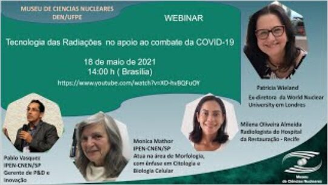
Museu de Ciências Nucleares
Webinars do Museu, criado pelo GDOIN, sobre as aplicações da energia nuclear.
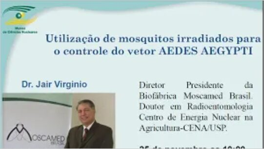
25 de novembro, ano a confirmar Português
Utilização de mosquitos irradiados para o controle do vetor Aedes aegypti
Assistir no YouTube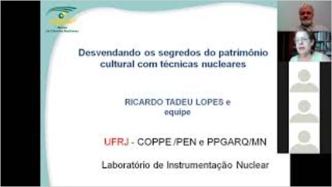
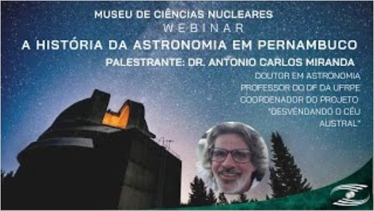
REPROLAM
Rede de Otimização da Proteção Radiológica Ocupacional na América Latina e no Caribe. Palestras em espanhol, com apoio do GDOIN.
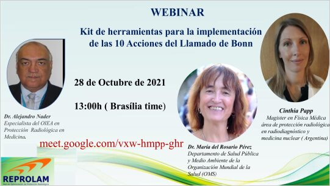
Espanhol
Kit de herramientas para la implementación de las 10 acciones del Llamado de Bonn
Assistir no YouTube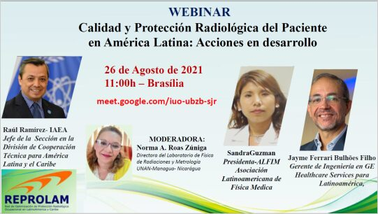
Espanhol
Calidad y protección radiológica del paciente en América Latina: acciones en desarrollo
Assistir no YouTube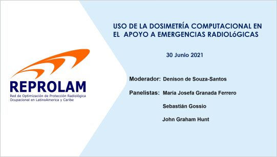
Espanhol
Uso de la dosimetría computacional en el apoyo a emergencias radiológicas
Assistir no YouTube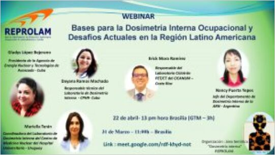
31 de março, ano a confirmar Espanhol
Bases para la dosimetría interna ocupacional y desafíos actuales en la región latinoamericana
Assistir no YouTube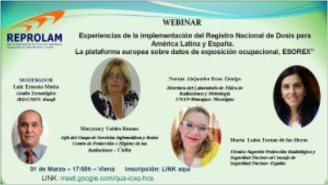
31 de março, ano a confirmar Espanhol
Experiencias de la implementación del Registro Nacional de Dosis para América Latina y España. La plataforma europea ESOREX
Assistir no YouTube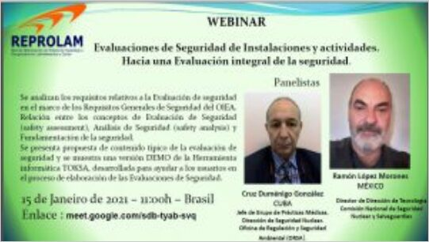
Espanhol
Evaluaciones de seguridad de instalaciones y actividades: hacia una evaluación integral de la seguridad
Assistir no YouTube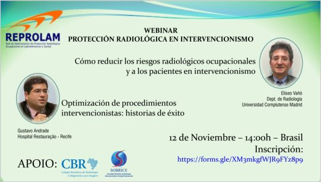
12 de novembro, ano a confirmar Espanhol
Protección radiológica en intervencionismo
Assistir no YouTubeGDOIN
Palestras organizadas pelo grupo.
Inglês